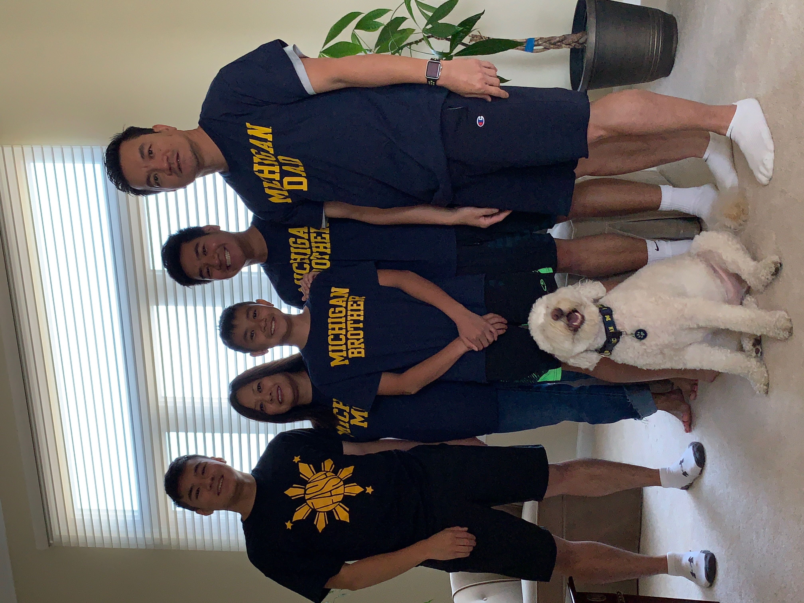
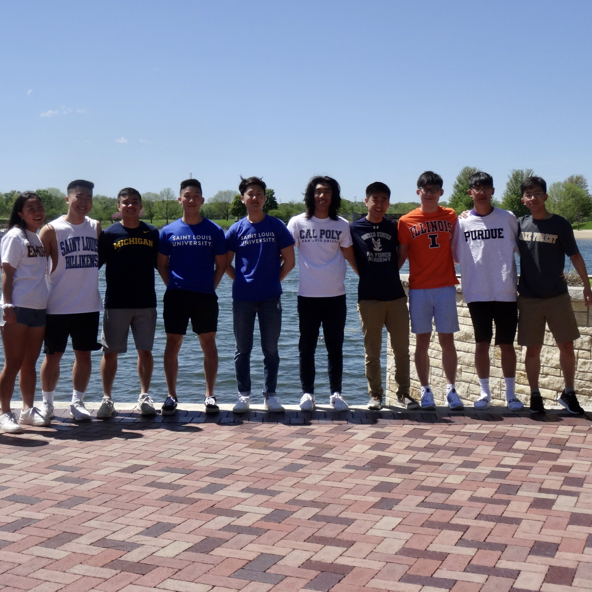
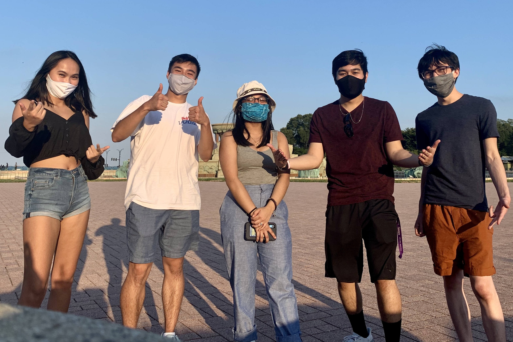
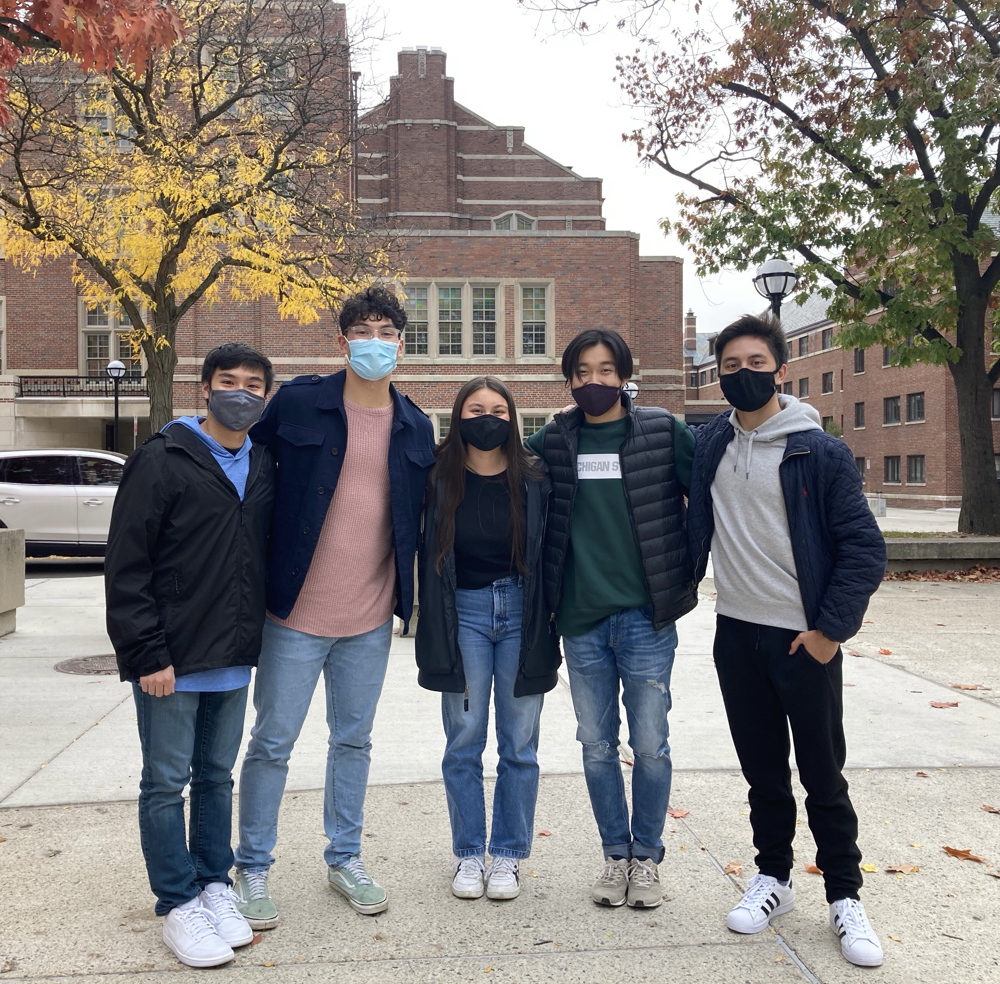

My Friends and Family
At home, I live with my two younger brothers, my parents, and my dog. My youngest brother is named Tyler and he is in the eighth grade. My middle brother is named Caden and he is currently a freshman at the University of Illinois at Urbana-Champaign. My mom is named Theresa and my dad is named Vince, and a fun fact about them is that they have the exact same birthday! My dog, Kobe, is a golden doodle and he is 5 years old.
I have a big group of friends from high school. We became close friends after winning our high school’s annual Senior Lip Sync contest that we entered as a group. For fun, we like to get smoothies, watch sports, and play videogames together like NBA 2K. We now go to universities all across the country, so when we get together over breaks, it is always a fun time.
At Michigan, I have met most of my friends through the student orgs that I have joined. When we hang out, we like to watch movies or YouTube videos, get food around Ann Arbor, study together, and listen to music. I am glad to have met these people and I hope they become my lifelong friends.
 